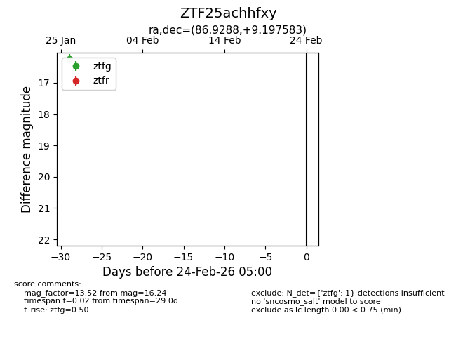
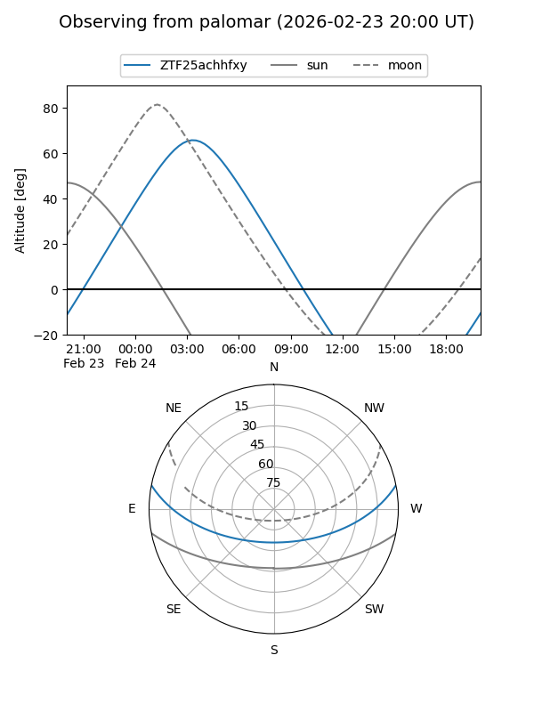

ZTF25achhfxy
Target ZTF25achhfxy at 2026-01-26 07:31
Aliases and brokers:
FINK: link
Lasair: link
ALeRCE: link
alt names
ZTF25achhfxy (ztf,fink_ztf)
Coordinates:
equatorial (ra, dec) = 86.9288,+9.19758
equatorial (HMS+DMS) = 05:47:42.91,+09:11:51.30
galactic (l, b) = (197.2887,-9.68632)
Flags:
Photometry:
last ztfg=16.24
1 ztfg detections
Lightcurve

Visibility


Additional plots